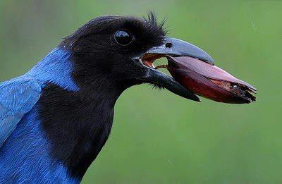
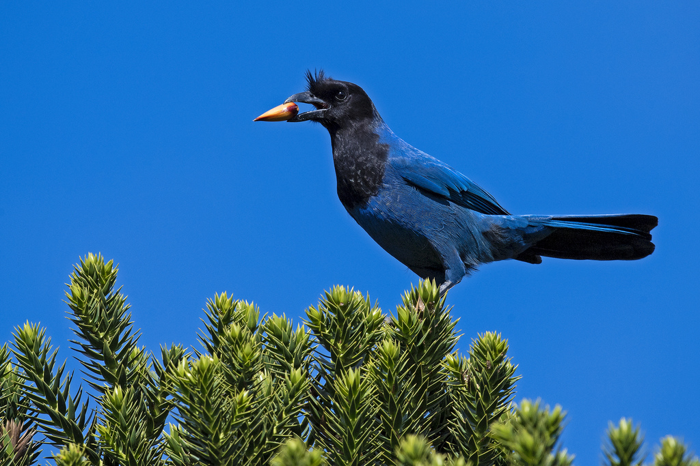
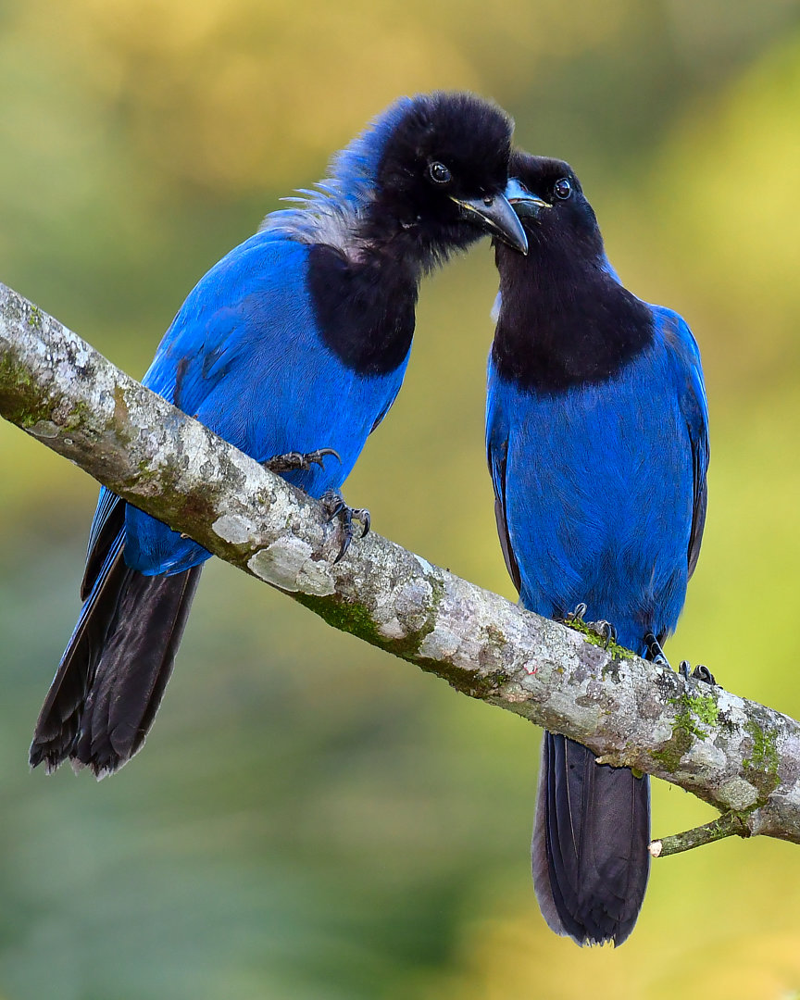

Sejam bem vindos ao meu site
A gralha-azul é um dos principais símbolos do Paraná. Além de sua beleza, essa ave tem um papel importante na natureza, pois ajuda a espalhar as sementes da araucária, contribuindo para o crescimento de novas árvores. Por isso, ela é considerada um símbolo da cultura, da biodiversidade e da preservação ambiental do estado.

Preservar a gralha-azul e as florestas de araucária significa proteger uma parte importante da natureza e da cultura do Paraná. Pequenas ações de cuidado com o meio ambiente podem contribuir para a conservação das espécies e para a manutenção das florestas para as futuras gerações.
A gralha-azul é conhecida como a plantadora de pinhão , pois costuma esconder as sementes da araucária para se alimentar depois. Muitas dessas sementes acabam germinando, formando novas araucárias. Esse comportamento faz da ave um importante símbolo da natureza e da cultura paranaense.

imporancia cultural
A relação entre a gralha-azul, a araucária e o pinhão faz parte da identidade cultural do Paraná. A ave está presente em histórias, lendas, desenhos e símbolos relacionados ao estado. Além de sua importância cultural, a gralha-azul também representa a importância de preservar o meio ambiente. A proteção das florestas e dos animais é fundamental para manter o equilíbrio da natureza e garantir que essas espécies continuem fazendo parte da paisagem paranaense.

curiosidades
Curiosidade 1
A gralha-azul é uma ave muito associada ao estado do Paraná. Ela se alimenta de diversos frutos e sementes, incluindo o pinhão. Ao esconder pinhões, pode contribuir para a dispersão das sementes de araucária. A araucária é uma das árvores mais características da paisagem paranaense. A gralha-azul é um exemplo de como os animais podem contribuir para a preservação e renovação das florestas.
Curiosidade 2
A gralha-azul é uma ave muito importante para a natureza do Paraná. Ela se alimenta principalmente de pinhões e ajuda na renovação das florestas ao espalhar e esconder sementes de araucária pelo solo. Algumas dessas sementes acabam germinando e dando origem a novas árvores. Por isso, a gralha-azul é considerada uma grande parceira da araucária e um símbolo da preservação das florestas paranaenses.
Memoria
Vou compartilhar imagens sobre a gralha azul